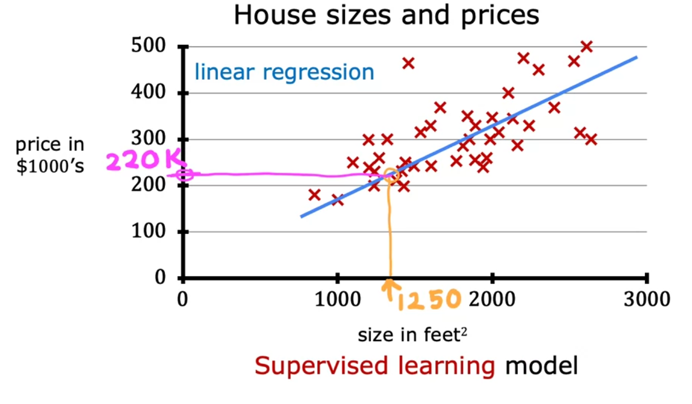

Imports
import numpy as np
import matplotlib.pyplot as plt
plt.rcdefaults()
Linear Regression
Linear regression is the simplest supervised learning model. It is used to predict the value of a target variable as a function of one or more input variables. In linear regression we assume that there is approximately a linear relationship between x and y where y is the equantity we are trying to predict using x. Mathematicaly, we can write the equation of the line as: $$ y = wx + b $$ here w and b are the parameters of the model also known as weights and bias.

An example is predicting the price of a house based on the size of the house. Note that we can create a regression model using more than one input variable.
Some Notations
Here are some notations:
| General Notation |
Description |
Python (if applicable) |
|---|---|---|
| scalar, non bold | ||
| vector, bold | ||
| Regression | ||
| Training Example feature values (in this lab - Size (1000 sqft)) | x_train |
|
| Training Example targets (in this lab Price (1000s of dollars)). | y_train |
|
| , | Training Example | x_i, y_i |
| m | Number of training examples | m |
| parameter: weight, | w |
|
| parameter: bias | b |
|
| The result of the model evaluation at parameterized by : | f_wb |
The Linear Model
The model function for linear regression (which is a function that maps from x to y) is represented as
The formula above is how you can represent straight lines - different values of \(w\) and \(b\) give you different straight lines on the plot.
The goal is to find the coefficients \(w\) and \(b\) such that the linear model is best fit to the data. This is done by defining the cost function and then minimizing it.
Cost Function
In order to implement linear regression the first key step is first to define a cost function. For regression tasks, the most obvious cost function is the mean squared error. This is defined as: \(\(J(w,b) = \frac{1}{2m} \sum\limits_{i = 0}^{m-1} (f_{w,b}(x^{(i)}) - y^{(i)})^2 \tag{1}\)\)
where \(\(f_{w,b}(x^{(i)}) = wx^{(i)} + b \tag{2}\)\)
- \(f_{w,b}(x^{(i)})\) is our prediction for example \(i\) using parameters \(w,b\).
- \((f_{w,b}(x^{(i)}) -y^{(i)})^2\) is the squared difference between the target value and the prediction.
- These differences are summed over all the \(m\) examples and divided by
2mto produce the cost, \(J(w,b)\).
Visualizing the Cost Function
Let's see how the cose function varies with the choice of parameters \(w\) and \(b\).
x_train = np.array([1.0, 1.7, 2.0, 2.5, 3.0, 3.2])
y_train = np.array([250, 300, 480, 430, 630, 730,])
def compute_cost(x, y, w, b):
"""
Computes the cost function for linear regression.
Args:
x (ndarray (m,)): Data, m examples
y (ndarray (m,)): target values
w,b (scalar) : model parameters
Returns
total_cost (float): The cost of using w,b as the parameters for linear regression
to fit the data points in x and y
"""
# number of training examples
m = x.shape[0]
cost_sum = 0
for i in range(m):
f_wb = w * x[i] + b
cost = (f_wb - y[i]) ** 2
cost_sum = cost_sum + cost
total_cost = (1 / (2 * m)) * cost_sum
return total_cost
w = np.linspace(-5, 5, 100)
b = np.linspace(-5, 5, 100)
mesh = np.meshgrid(w, b)
cost = np.zeros((len(w), len(b)))
for i in range(len(w)):
for j in range(len(b)):
cost[i, j] = compute_cost(x_train, y_train, w[i], b[j])
%matplotlib widget
ax = plt.axes(projection='3d')
ax.plot_surface(mesh[0], mesh[1], cost, cmap='viridis', edgecolor='none');